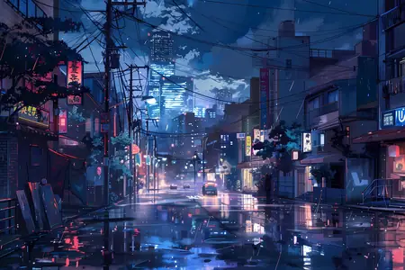
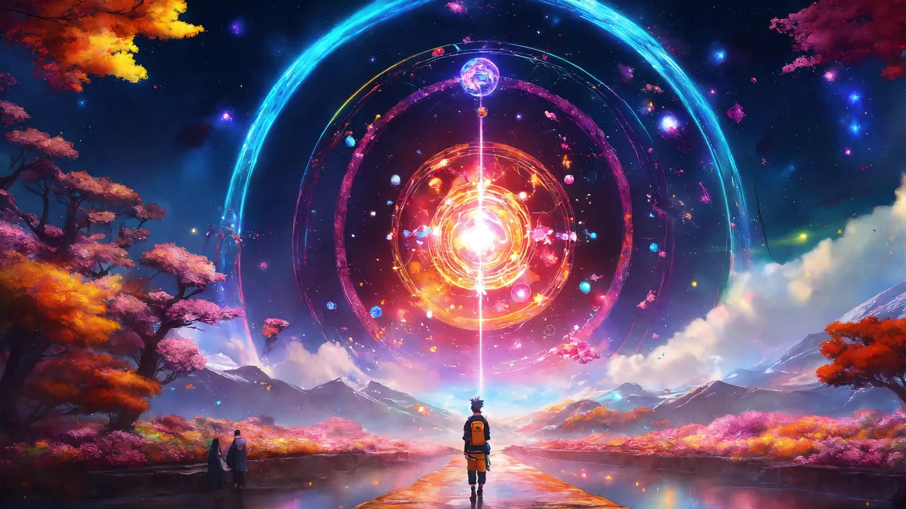
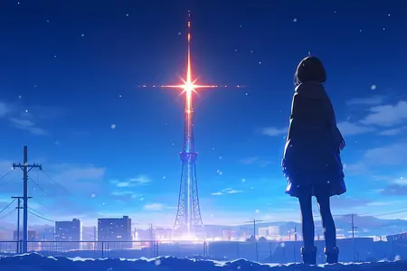
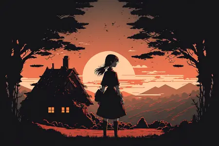

Anime
Browse popular series by genre and see the year and number of seasons.
Open the anime library →A website for people who enjoy anime and want to discover new series and learn more about them.
Information about anime, including release dates, seasons, characters, genres, and recommendations.


Browse popular series by genre and see the year and number of seasons.
Open the anime library →
Find what to watch next, whether you are a beginner or a big fan.
See the recommendations →
Know a great series we should add? Send us your favorite.
Send a suggestion →Start with popular, easy-to-follow series such as Death Note, Fullmetal Alchemist: Brotherhood, My Hero Academia, Demon Slayer, or the movie Spirited Away. Pick the genre you already enjoy.
The most popular genres are Shonen (action and adventure aimed at teens, like Naruto and One Piece), Romance, Comedy, Fantasy, Sci-Fi, Slice of Life, Horror, and Sports. There are also Isekai stories, where a character is transported to another world.
Yes! Cells at Work! teaches how the human body works, Dr. Stone explains science and engineering, Space Brothers is about space exploration, Chihayafuru introduces the traditional Japanese card game Karuta, and Fullmetal Alchemist touches on chemistry ideas and ethics. You can enjoy them and learn at the same time.
Yes, to a good degree. Anime shows everyday Japanese life, festivals, food, school life, and traditions. For language, you can learn common words and phrases, pronunciation, and how people speak in different situations. However, anime dialogue is often exaggerated or casual, so it is best to combine it with proper study materials, such as a course or an app, if you want to learn Japanese seriously.
Manga are Japanese comics and graphic novels. They are usually printed in black and white and read from right to left. Many popular anime are based on manga, such as Naruto, One Piece, and Attack on Titan, so reading the manga is a great way to follow the story further.
The hero, About, and home card images come from Pixabay creators jensenartofficial, cosmiiccreations, vandesart, and qiaominxu, and several of them are AI-generated. The genre illustrations on the Recommendations page were created with AI tools. Anime posters belong to their respective studios and publishers and are shown here for educational purposes only.